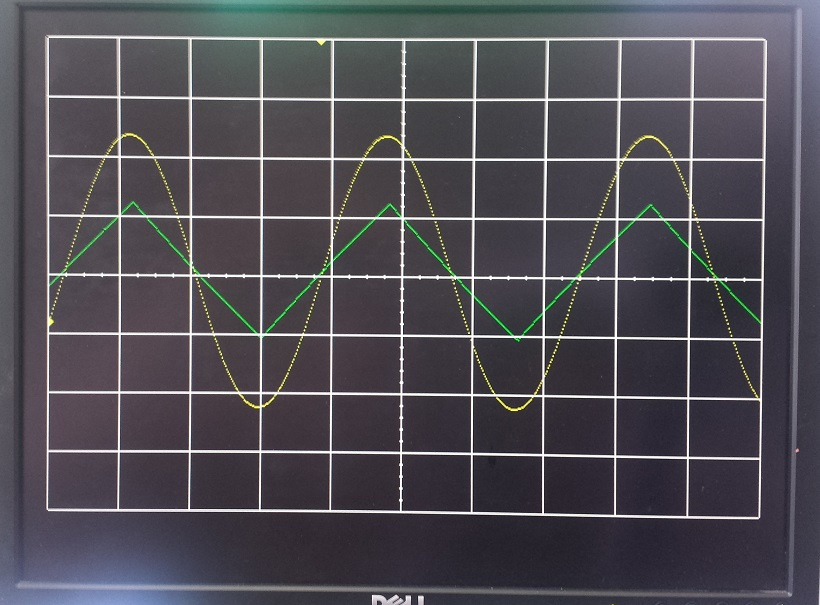
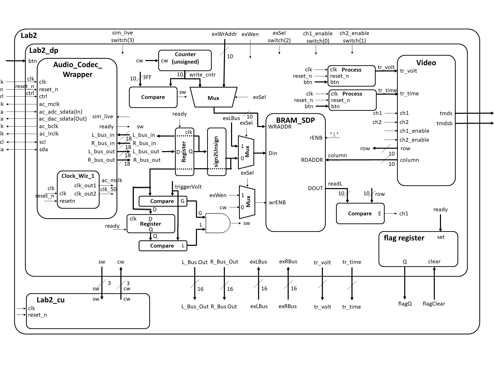
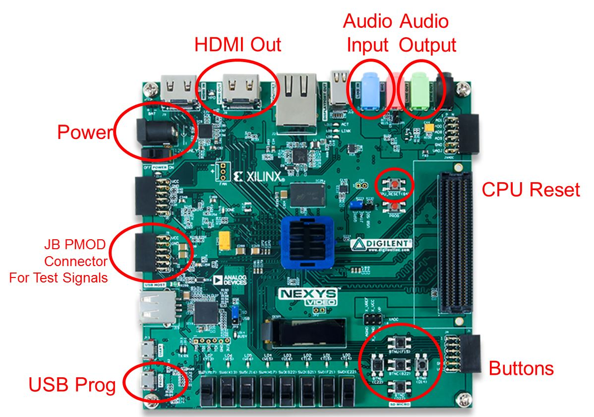

Lab 2 - Data Acquisition, Storage and Display
Lab Overview
In this lab, we will integrate the video display controller developed
in Lab 1 with the audio codec on the Nexys Video board to build a basic
2-channel oscilloscope. When complete, your lab should generate an
output similar to the picture below.
 |
Architecture
Just like the design of Lab 1, Lab 2 is broken down into
a bunch of separate modules, shown in the block diagram below.
Some of the components in the block diagram will be given to
you and some you created in Lab 1. It is important to note
that some of the components and signals associated with this
diagram will not be needed for Lab 2, but have been included because you will need them in Labs 3 and 4.

Consider the data in the diagram as flowing from left
to right. You will provide an input signal to the Nexys board via a 3.5mm cable connected to the
blue line-in jack. This signal then passes through an
Analog Devices
ADAU1761 SigmaDSP Audio Codec. The ADAU1761 samples
the audio input at 48kHz into separate 18-bit 2's complement left
and right channels. The ADAU1761 then transfers this data to our Artix 7
chip over a serial bus through the 7 signals on the left side of the Lab2
component. You can read more about the audio codec on page 27 of the Nexys Video manual
(here).
The serial protocol coming from the audio codec is quite complex, so you will be given the
Audio Codec Wrapper component as an interface to extract the incoming signal (Audio Codec Wrapper in the Figure above). Whenever new converted data is ready from
the Audio Codec, the ready signal will go high for a single clock cycle. Your circuit will then do two things with the
incoming L_bus_out and R_bus_out signals: First, it will loop both of these signals back
into the Audio Codec so that you can verify (by listening on the green line-out jack)
that the Audio Codec hardware and firmware are operating correctly. This is
accomplished using the VHDL code below.
process (clk)
begin
if (rising_edge(clk)) then
if reset_n = '0' then
L_bus_in <= (others => '0');
R_bus_in <= (others => '0');
elsif(ready = '1') then
L_bus_in <= L_bus_out;
R_bus_in <= R_bus_out;
end if;
end if;
end process;
Second, your circuit will need to send the L_bus_out and R_bus_out signals in an unsigned format to be stored in the block ram (BRAM).
To do this, you will need to convert the 2's complement values to unsigned.
Performing this conversion is technically easy,
but may be a little difficult to wrap your head around, so let's do some examples. Consider the table below.
| Input Value | Ouput Value
|
| 2's complement | 2's value | unsigned | unsigned value
|
| 100...000 | -131072 | 000...000 | 0
|
| 111...111 | -1 | 011...111 | 131071
|
| 000...000 | 0 | 100...000 | 131072
|
| 000...001 | 1 | 100...001 | 131073
|
| 011...111 | 131071 | 111...111 | 262143
|
The values in the left 2 columns represent the 2's complement number coming out of the Audio Codec, in this case
L_bus_out, while the right 2 columns represent the output of the box labeled
"sign2unsign" in the block diagram. What we are essentially doing is shifting
the unsigned values up by 131072 (the value which will make all 18-bit numbers positive) so that they all fall into a positive range.
If you notice the pattern for these 5 number conversions, the lower 17-bits do not change. Only the most-significant-bit changes,
and it is just inverted. In the zip file, there is a simple testbench called convert_unsigned_tb.vhdl you can modify to test this math. If you want to "not" the MSB
and then concatenate "&" back the lower 17-bits, I'd recommend doing this as a std_logic_vector. You can also do this conversion with
the number stored as an unsigned. In this case you can add a special number that keeps the lower 17-bits the same, but inverts the MSB.
If you do this conversion correctly using the testbench, you should get an output simulation plot similar to sim_plot_test_convert.jpg in the zip file.
Here are a couple more pieces of info to help you understand the block diagram above.
Consider the mux with its input going to the WRADDR input of the "BRAM_SDP" block in the block diagram.
This mux circuitry attached to the write address of the BRAM will be used in Lab3,
allowing the microBlaze processor to take over write duties for the RAM (as opposed to an external signal from the Audio Codec).
Independent of the write circuitry, the read circuit pulls data from the RAM,
and draws the waveform. Unlike for the write circuitry, the read circuitry
requires no FSM control.
Datapath
Since its a very complex piece of circuitry, the entity for the datapath (LAB2_DP in the block diagram) is
given below.
entity lab2_datapath is
Port(
clk : in STD_LOGIC;
reset_n : in STD_LOGIC;
ac_mclk : out STD_LOGIC;
ac_adc_sdata : in STD_LOGIC;
ac_dac_sdata : out STD_LOGIC;
ac_bclk : out STD_LOGIC;
ac_lrclk : out STD_LOGIC;
scl : inout STD_LOGIC;
sda : inout STD_LOGIC;
tmds : out STD_LOGIC_VECTOR (3 downto 0);
tmdsb : out STD_LOGIC_VECTOR (3 downto 0);
sw: out std_logic_vector(2 downto 0);
cw: in std_logic_vector (2 downto 0);
btn: in STD_LOGIC_VECTOR(4 downto 0);
switch: in STD_LOGIC_VECTOR(3 downto 0);
exWrAddr: in std_logic_vector(9 downto 0);
exWen, exSel: in std_logic;
Lbus_out, Rbus_out: out std_logic_vector(15 downto 0);
exLbus, exRbus: in std_logic_vector(15 downto 0);
flagQ: out std_logic;
flagClear: in std_logic);
end lab2_datapath;
Flag Register
In Lab 3, we will be integrating most of the components from this lab with the
MicroBlaze processor (a processor we program onto our FPGA). In order to make this smooth, we will need a
way to transfer information between the two systems a technique similar to a
2-line handshake. To make this possible, you will need to build a component
called a flag register. The behavior of the flag register is shown in the table below.
| reset_n | clk | set | clear | Q+
|
| 0 | X | X | X | 0
|
| 1 | 0,1,falling | X | X | Q
|
| 1 | rising | 0 | 0 | Q
|
| 1 | rising | 1 | 0 | 1
|
| 1 | rising | 0 | 1 | 0
|
| 1 | rising | 1 | 1 | X
|
The 1-bit flag register will interface our lab2 component with a MicroBlaze in lab3
as follows: The LAB2 component will produce some data, put it on a data
line to the MicroBlaze, and then set the flag register using the READY signal. Then, the
MicroBlaze will, at some point, look at the flag register bit. When it
sees that the 'set' bit is 1, the MicroBlaze will grab the data from the register and clear the set bit.
These are just like the flag bits on the 382 ARM processor.
BRAM
You need to map the ports of BRAM to include it in your lab2_datapath. The component is declared in the UNIMACRO library - look at that library to
figure out how to port map BRAM.
library UNIMACRO; -- This contains links to the Xilinx block RAM
use UNIMACRO.vcomponents.all;
VHDL Code
The files below will give you a start on Lab 2.
- A package file. Once you insert it in your vivado project, to edit the file, you can find it under Design Sources, expand the VHDL folder, then expand the xil_defaultlib folder, and you can double click lab2_pack.vhdl to edit the file: lab2_pack.vhdl. I would highly suggest putting all your component declarations here.
- Overall Lab 2 File: lab2.vhd
- Constraint file: Lab2.xdc
- All this code is in this ZIP file, plus some extra testbenches: lab2_code_for_cadets.zip
Switches
- Switch(0): ch1_enable
- Switch(1): ch2_enable
- Switch(3): ex_Sel
- Switch(4): sim_live
Connections
 |
Generating Audio Waveforms
Since you need to use a 3.5mm jack to input signals to the Nexys board, your phone's audio output works quite well.
However, make sure you get an app where you can control both the left and right audio channels individually (i.e. the green and yellow signals in the figure above).
The
Keuwl Dual Channel
Function Generator (available on Google Play) works well for Android Phones, and is easy to use once you get the hang of it.
Gate Checks for Required Functionality
There are 3 gate checks associated with this lab, each worth 5 points - see the rubric below. This year we will use Gradescope to track when you complete the milestones.
Gate Check 1
By COB Lesson 13, you must have started a Lab 2 Vivado project and downloaded the template files
and drop in your Video, VGA, Scopeface, dvid, and tdms files from Lab 1 into your Lab 2 project
in order to test your Lab 1 Scopeface works when you implement your BRAM using the two initialized
signal examples in BRAM_example_init.vhd. This does not require the audio wrapper (and clockwiz_1) or your control unit is working yet, so you do not need to include these vhdl files in your design yet if you don't want to.
Your Scopeface/Video should continuously be reading the left and right BRAM signals displaying them on the monitor.
You must implement Video entity (from Lab 1) to take the channel output from the left and right BRAMs and send it to the Channel 1 and 2
inputs to be displayed when the readL and readR values equal the row value. Implement
this on the hardware and verify that your scopeface is still present and some values are being
displayed for Channel 1 (at this point the scaling
may be wrong).
How do you read from BRAM continuously? From last lesson, to read we need to put the address we want to read on RDADDR, which in this case
is the column requested by video; and when we enable the read RDEN, the BRAM will place the 16-bit data value at this address on DO.
So to continually read, we set RDEN <= '1'. You can then compare this DO value with the current video's row, and if they are equal, let ch1 <= '1'.
After you demo this, this is a good opportunity to work on scaling the signals
so their DC value is centered on your grids y-axis. Note: the DC center value on your scope is row 220, while
if you grabbed the upper ten bits from the BRAM DO, its DC center value will be 512 (a difference of del_x = 512-220 = 292).
How does this change the comparitor you use to assign ch1 and ch2? (which compares if ReadL = row...
does it need to now compare something like if ReadL = row +/- del_x ?)
Notice from the block diagram you will copy your Video instantiation and button processes from Lab 1
into your Lab 2 Datapath. You will also have to re-implement the Lab 1 Clocking Wizard in you
Lab 2 project. Doing this will eliminate a lot of errors from un-driven output signals on lab 2 top.
Additionally your Scopeface and Button inputs from Lab 1 should be functional as well.
Also, you may need to have implement another Clocking Wizard for the Audio Codec Wrapper inside
the Datapath entity to get the bit stream to generate.
The demo can be live to your instructor or an image uploaded to streams.
Gate Check 2
NOTE: THIS IS THE HARDEST PART! By COB Lesson 14, you must have implemented and connected the BRAM
Address Counter to left and right BRAMs, instantiated the Audio Codec Wrapper in Simulation mode (sim_live = '0'),
and your control unit, such that your control unit writes the simulated audio data to the left and right BRAM and
you can see the waveforms plotted on the monitor. (at this point, since there is no trigger, the waveform may or may not be scrolling across the display and the scaling
may be wrong. The simulated Audio Wrapper is continually sending out 1024 samples, and if your counter (with FSM) are in sync writing 1024 values,
it will be writing the same 1024 values over and over, making the output waveforms on appear stationary. If you want the simulated waveforms
to scroll as if they are not triggered, change your counter rollover to a lesser value like 640... remember there are only
640 columns on scopeface displayed. Another note about this counter: since your first column on your scopeface is column 20,
should you initialize the counter at 20?).
How do you write a sample from the audio wrapper to the BRAM? From last lesson, to write we need to: (1) set WE => "11" [not using this feature], (2)
put the address we want to write to on WRADDR, (3) put the converted data sample from the audio wrapper on the 16-bit data input DI, and (3) signal
write enable WREN = '1' with a CW from your FSM. Since the address we are writing to in the BRAM is controlled by the counter, your FSM needs to
first reset the counter. Then it should wait for the Ready signal. When ready goes high, you can then save the sample (let WE = '1' with a CW), then
increment the counter (with a CW to increment the counter), then compare to see if you are done counting (by checking a SW). If not done counting, then
jump back to wait for ready, otherwise, start the process over by jumping to the state to reset the counter.
Reminder: You must successfully convert the signed audio data
from the Audio_Codec_Wrapper into unsigned data needed for the monitor. After you demo this, this is a good opportunity to work on scaling the signals
so their DC value is centered on your grids y-axis and possibly work on the trigger hardware.
If this does not work, you must create a Testbench to help debug why it is not working (see example testbenches in the zip file).
Reminder: implement another Clocking Wizard and the Audio Codec Wrapper inside
the Datapath entity to get your Audio Codec to begin functioning (if not done in gate check 1).
The demo can be live to your instructor or an image (if stationary) or video (if scrolling) uploaded to streams.
Gate Check 3
By COB Lesson 16, redo Gate Check 2, except with the Audio Codec Wrapper in Live mode (sim_live = '1'). (at this point, since there is no trigger, the waveform will be scrolling across the display).
Also make connections to loopback the
serial ADC input back out to the DAC output (i.e. send the signal back into the Codec). Once you
implement the design on the board, you can verify functionality by applying an audio signal to the
audio line in jack (blue) and listening to it on the audio line out jack (Green), and seeing the output on the monitor.
After you finish Gate Check 3, this is a good time to implement proper triggering on the trig_volt value. Besides the hardware to create the SW
to signal the trigger, you'll also need to add an initial state to "wait for trigger" in your FSM. The rest of the FSM is basically the same.
If this does not work, you must create a Testbench to help debug why it is not working.
The demo can be live to your instructor or a video uploaded to streams.
Required Functionality
Get a single channel of the oscilloscope to display with
reliable triggering that holds the waveform at a single
point on the left edge of the display (like having a fixed trigger_volt). A 220Hz waveform
should display something similar to what is shown in the screenshot at the top of this page.
Additionally, you must have the following done:
Use a package file to contain all your component declarations.
- The waveform displayed should be centered about the center of the grid (row 220)
- Use separate datapath and control unit.
- The Mini-C design technique can be used but is NOT required. However, your instructor will expect you create Lab2_cu using the state machine coding style used
in Lesson 9, with a process for state transitions, separated from a CSA LUT section for generating the output CWs.
- Your datapath must use processes which are similar
to our basic building block (counter, register, mux, etc.).
I do not want to see one massive process that attempts
to do all the work in the datapath.
Testbench for the flagRegister.
Testbench for the control unit.
Testbench for the datapath unit showing data (different value than
what is given in the testbench) coming out of the audio codec and being
converted from signed to unsigned and then to std_logic_vector to go into your BRAM.
Include calculations to back up what the waveform shows.
For Bonus Points: Testbench for the datapath unit showing that same data coming out of the BRAM.
Make sure you show the read address and the data values coming out. This will require you to set your
control words on the testbench. Additionally, you will have to drive the pixel_clock on the Video Module.
Once you get the datapath testbench running you will notice that DCM module doesn't put out a clock in the
Video Module.
The demo can be live to your instructor or a video uploaded to streams.
B-level functionality
- You can swap the A and B functionality order if you like
- Meet all the requirements of required functionality
- Add a second channel (in green).
- Include the flag register and exSel (and other ex___ signals) with their muxes as shown in the block diagram
The demo can be live to your instructor or a video uploaded to streams.
A-level functionality
- Meet all the requirements of B-level functionality.
- Use the trigger voltage marker to establish the actual trigger voltage used to capture the waveform.
As the trigger is moved up and down, you should see the point at which the waveform
intersects the left side of the screen change. The trigger arrow marker must be calibrated
with the start of the waveform at column 20
- Integrate the button debouncing strategy in HW #7 (or an equivalent debouncing method) to debounce
the buttons controlling the trigger time and trigger voltage.
- Move the trigger volt and trigger time cursors on the screen using the buttons.
The demo can be live to your instructor or a video uploaded to streams.
Turn In
All your work in this lab is to be submitted using Bitbucket and you will make submission in Gradescope to record the time each milestone is completed.
The main part of the lab is your README, documenting your design. The README can be in markdown, word, or a pdf, and should be uploaded to bitbucket.
Your README must include the following:
- Introduction - Provide a brief overview of the
problem.
- Design/Implementation - Provide block-diagram of your
solution using the signal names in your code. The
block diagram given above is somewhat incomplete, so make sure to include corrections to it.
Also, include a state transition diagram for your Lab2_cu.
Note: the Mini-C design technique can be used but is NOT required. However, your instructor will expect you create Lab2_cu using the state machine coding style used
in Lesson 9, with a process for state transitions, separated from a CSA LUT section for generating the output CWs.
For each module that you built, explain
its overall purpose, inputs, outputs, and behavior. Include all your
vhdl files (code and testbench), wcfg file, and bit files. Put these
in a folder called "code".
- Test/Debug - Briefly describe the methods used
to verify system functionality. Include/discuss any testbench simulation plots you used.
List the major problems you encountered and how you fixed them.
This should cover all the problems you encountered in the lab and
how you fixed them. Break each problem and solution into separate
paragraphs.
Capability - Well you have built a oscilloscope, what
are its capabilities?
The horizontal axis represents time. There are 10 major
divisions on the display; how long does each major division represent?
Each major time division is split into 4 minor division, how long
does each minor division represent?
Generate a sine wave that can be fully captured on your display
(like the yellow channel in the image at the top of this web page).
record its height in major and minor vertical divisions. Measure
this same audio output using the break out audio cable. Record the
peak-to-peak voltage. Compute the number of volts in each major and
minor vertical division.
Starting at address 0, how long does it take to fill the entire
memory with audio samples (coming in at 48kHz)?
How long does it take to completely draw the display once?
The question is likely relevant to Lab 3 - how long is the
vsynch signal held low?
- Results - This section should clearly
state for each milestone/functionality the date/time it was achieved, level of achievement
(e.g, achieved, partially-achieved, not achieved), what was achieved, and how you proved it
(via demo or evidence like images/videos).
For example, you could have a table like this:
| Milestone |
Date/Time |
What was achieved |
| Gate Check 1 |
|
Achieved: demonstrated lab#1 worked with the two test signals in the BRAM displayed on scopeface monitor and buttons working |
| Gate Check 2 |
|
Achieved: Not demo'd to instructor. See video show the two simulated audio signals scrolling on monitor (not triggered) |
| Gate Check 3 |
|
Achieved: demo'd to instructor audio loopback test and the live audio waves scrolling on monitor |
| Required Functionality |
|
Achieved, demo'd to instructor that audio waveform properly triggers at a set point on the display (not using trig_volt buttons). Code has separate FSM and datapath as required. |
| B Functionality |
|
Partially Achieved: demo'd to instructor the 2nd channel working (see B_funct.jpg, showing sine wave on ch1 and triangle wave on ch2), however, never got the buttons to properly debounce. |
| A Functionality |
|
Not Achieved |
- Conclusion - Explain what your learned from this
lab and what changes you would recommend in future years to this lab
or the lectures leading up to this lab.
Grading
| Item |
Points |
| Gate Check 1 |
5 |
| Gate Check 2 |
5 |
| Gate Check 3 |
5 |
| Required Functionality |
30 |
| B Functionality |
10 |
| A Functionality |
10 |
| Use of Git / Bitbucket |
5 |
| Code Style |
10 |
| README |
20 |
| Total |
100 |